SmokingTracker · Pilot Programme · For Counsellors
This guide walks you through how to integrate real-time usage data into your CBT or Harm Reduction sessions — from inviting your first client to reading the analytics together in session.
Pilot Quick Start · If you read nothing else, do this
Everything else in this guide is here when you need it — but these five steps are all you need to get started. Takes about 10–15 minutes total. You can't break anything — feel free to explore.
Before the pilot
SmokingTracker is a client-controlled data tool. Your clients decide what you can see, and they can change their mind at any time. Understanding this upfront will shape how you introduce the tool.
You will always see whether a client logged. Everything else depends on what they choose to share.
| Data | You can see it? | Notes |
|---|---|---|
| Whether the client logged something today | ✓ Always | Even if all sharing is off, you can see activity vs. silence. |
| Daily usage count & trend | Client's choice | Off by default — the client enables it in Settings → My Counsellor. |
| Session details (mood, location, method) | Client's choice | Each data type has its own toggle in the client's settings. All off by default. |
| Notes clients write when logging a session or craving | Client's choice | Visible in the Analytics → Notes tab when the client has enabled note sharing. Off by default. |
| Calendar heatmap & Analytics | Client's choice | The more a client shares, the richer the analytics become. |
| Your alias for the client | ✗ Never | The label you set is only visible in your dashboard — never shown to the client. |
The goal of this pilot is not to maximise data access. A client sharing only "logged today / didn't log" is still valuable — it tells you they are engaging. Gradually building trust around data sharing is itself a therapeutic process.
Before you can invite clients or review data, you need to activate your account. You'll receive a personal setup link by email from the SmokingTracker team — here's what to expect.
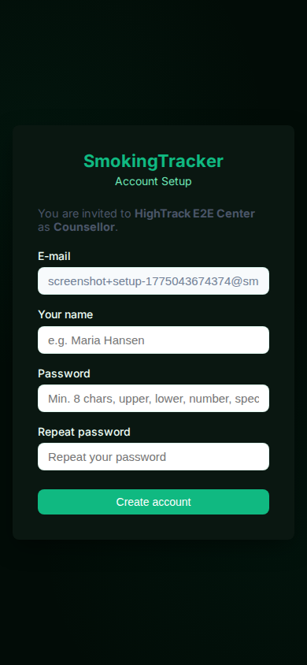
The setup page — pre-filled email, choose your password
Just get in touch with us and we'll send a fresh one straight away — it only takes a moment on our end.
Your dashboard can alert you when a client's activity drops — but only if you've configured how you want to be notified. Go to Settings → Notification Settings in your dashboard.
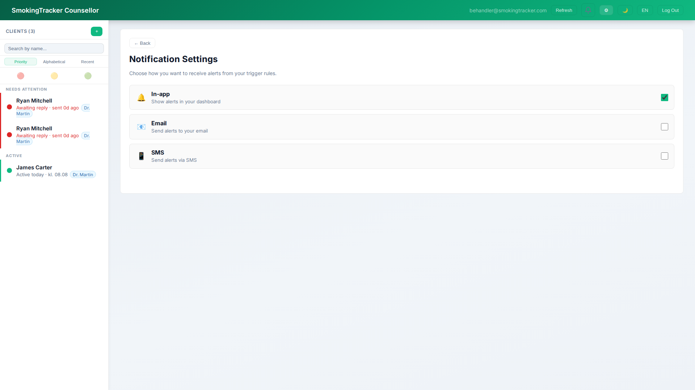
Counsellor dashboard · Settings → Notification Settings
Shows as a badge in your dashboard. Useful if you check the dashboard daily.
Pushes a notification directly to you. Recommended if you won't open the dashboard between sessions.
Session 1
From your counsellor dashboard, click the + button in the top-right of the client list to open the Add Client modal.
You'll be asked for three things:
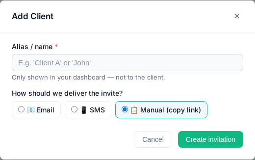
The Add Client modal
Understanding the client flow will help you explain it confidently in session — and prevent confusion when they open the link.
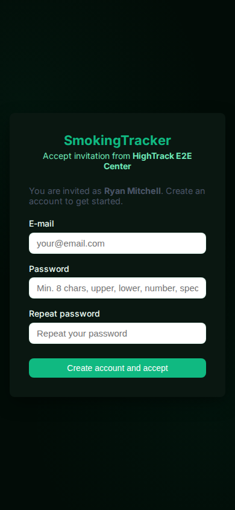
They open the link &
create an account
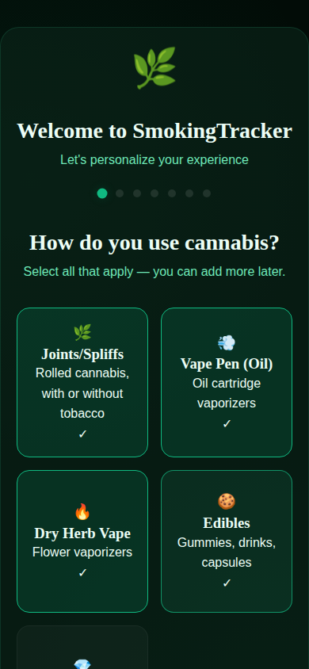
They select what
they consume
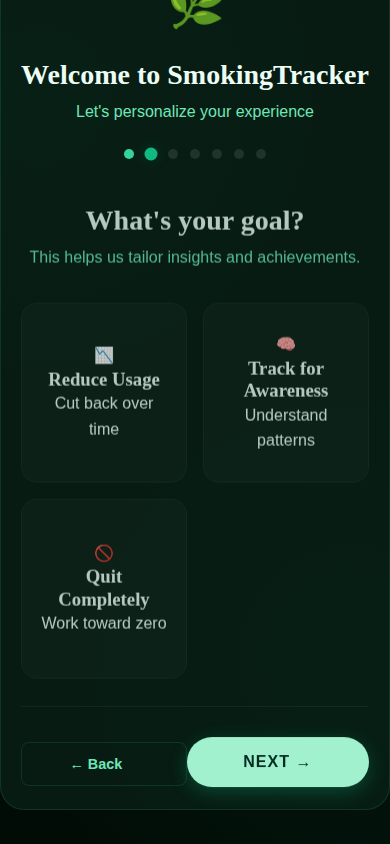
They set a goal
(Reduce / Awareness / Quit)
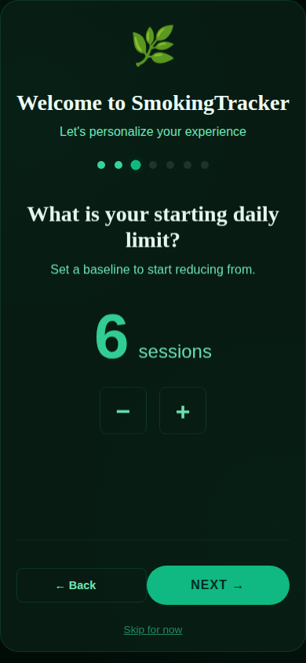
Reduce / Quit only:
set a starting daily limit
The goal shapes their home screen and what achievements they unlock — worth a brief conversation before they tap through. Clients who choose Reduce or Quit will also be asked to set a daily limit. This is what the app uses to flag overuse, so it matters clinically. Start where they actually are, not where they want to be — an over-ambitious limit in week one is demoralising. Clients choosing Track for Awareness skip this step entirely.
After onboarding, the client lands on a calendar heatmap. Each coloured day represents logged usage. Tapping Log Session opens a quick modal.
The session modal captures:
Encourage clients to log at the moment, not in retrospect. Even a quick log without mood/location is more valuable than a detailed one added two days later.
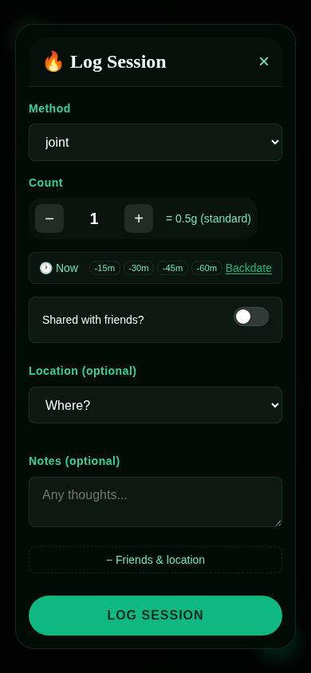
The Log Session modal (client view)
Introducing a tracking tool can feel sensitive, and some clients will "fake-track" — logging what they think you want to see rather than what actually happened. This is common and not a problem to solve immediately. Have the sharing conversation proactively, and the data will become more honest over time.
Clients control their data sharing in Settings → My Counsellor. They can toggle each category independently. This is a good thing — it puts them in the driver's seat.
You can always see whether the client logged that day, regardless of sharing settings. That alone is enough to open a conversation.
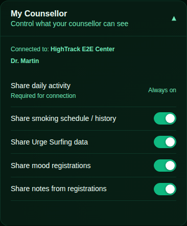
Client view: Settings → My Counsellor
Clients who say "sure, share everything" immediately may not have fully processed what that means. Give them a moment. The goal is informed consent, not maximum access.
Clients who are reluctant to share anything are still engaged — they accepted the invite and showed up. Start there.
In Settings → Smoke-free hours, clients can block out a time window each day during which they commit to not using. This is useful for clients working toward reduction rather than cessation.
Suggested use in session: "What time of day do you feel most in control? Let's protect that window."
Even a one-hour commitment (e.g. 8:00–09:00 AM, before work) creates a positive habit anchor. Review whether the window was kept when you look at the Calendar together next session.
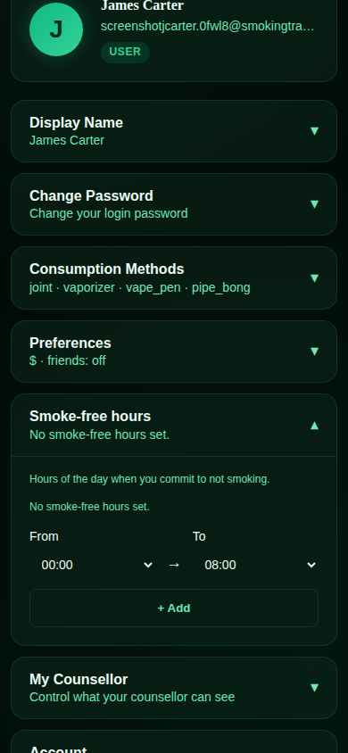
Client view: Settings → Smoke-free hours
Between sessions
SmokingTracker is most valuable when data is captured "in the moment" — but life happens, and people forget. Your job between sessions is not to police engagement; it's to notice silence and respond with curiosity, not judgement.
Your dashboard opens on a client list sorted by Priority by default. Clients who haven't logged recently appear at the top, flagged by colour.
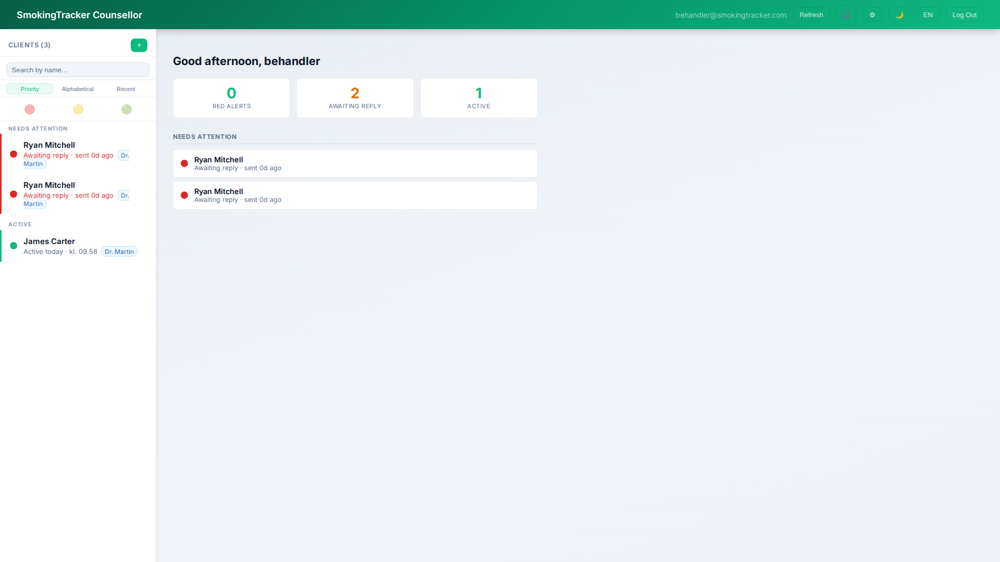
Counsellor dashboard · Client list in Priority view
If a client hasn't logged in 48 hours, treat it as a moment to reach out — not as non-compliance. For example: a client who was logging daily and suddenly stops may have had a difficult week — not lost motivation. A brief, non-judgemental message ("Noticed it's been a few days — no pressure, just checking in") can re-engage a client who quietly drifted.
Clients often stop logging because they "messed up" and feel too guilty to start again. By explicitly naming that forgetting is normal, you make it safe to pick back up.
The data exists to serve them, not to hold them accountable. Framing inactivity as a conversation opener — not a red flag — reinforces that dynamic.
In session
A brief review before the session helps you arrive with a hypothesis rather than reading data cold in the room. But the most valuable moments come when you open the record together — let the client see what you're seeing, and ask them to make sense of it. They are always the expert on their own behaviour; the data is the prompt, not the conclusion.
The Overview tab (the first tab in the top navigation of any client record) leads with a single headline metric — typically a percentage change week-on-week — and a set of auto-generated Insights cards that summarise patterns the system has detected.
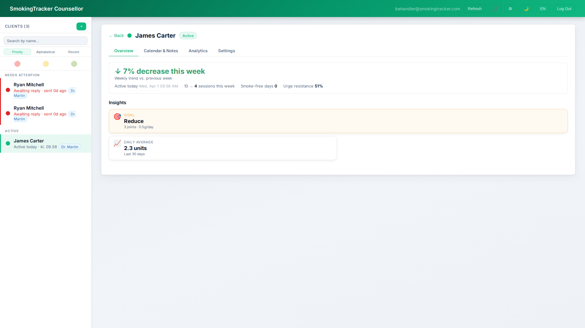
Client detail view · Overview tab — showing a 43% decrease week-on-week and an auto-generated Insight card
Don't read the card aloud — show it to the client and ask them to respond: "Does that match how it feels to you?" This prevents the data from feeling like a verdict and invites the client to be curious about their own patterns.
The Calendar & Notes tab sits between the Overview and Analytics tabs in every client record. The left side shows the same activity heatmap from Part 3 — green days logged, gaps flagged in amber or red. The right side is entirely yours: a rich-text notes field that only you can see.
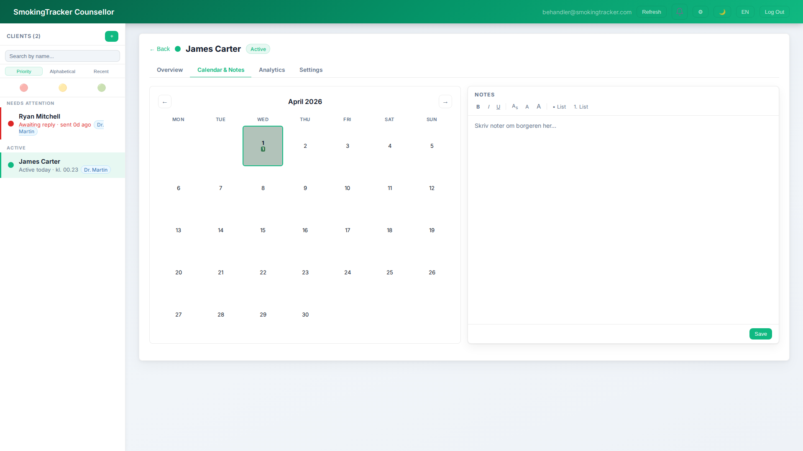
Counsellor dashboard · Calendar & Notes tab — heatmap left, your private notes right
Write one sentence first: "What am I expecting to see this week, and why?" The gap between what you expected and what you actually find is often where the clinical work is. The notes field is the right place for that sentence.
Four ways to use it:
Before you open the data, note what you expect to see and why. This protects you from anchoring on the first chart — and helps you notice when the data genuinely surprises you.
What did the client say in session that the numbers can't capture? What shifted in the room? Note it while it's fresh — before your next client.
When you check in mid-week, don't just read the data — respond to it. "Usage spiked Wednesday — worth exploring whether that was the conflict they mentioned." Those micro-observations shape your next session.
Your notes become a longitudinal record of your clinical reasoning. Where have your hypotheses shifted? What have you been wrong about? That's valuable clinical supervision material.
Once your client has logged for at least a week, the Analytics tab unlocks the detail behind the headline. Each sub-tab focuses on a different dimension of the behaviour.
Shows the split between sessions where the client was with friends versus alone. This directly informs whether social pressure is a clinically relevant factor.
Shift focus to boredom, loneliness, habit-loops at home. Refusal skills for parties are less relevant — but emotional regulation strategies are.
Explore peer influence, social identity, and rehearse polite refusal. Consider whether their social environment actively enables use.
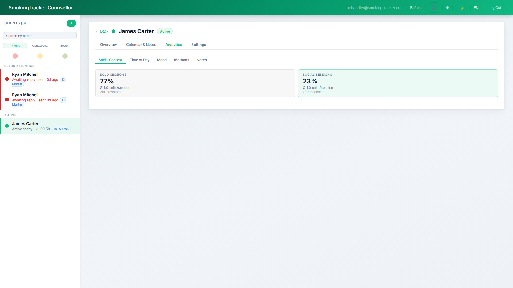
Shows when during the day usage is highest. Peak usage hours often correspond to specific habit loops or emotional states — not just general desire.
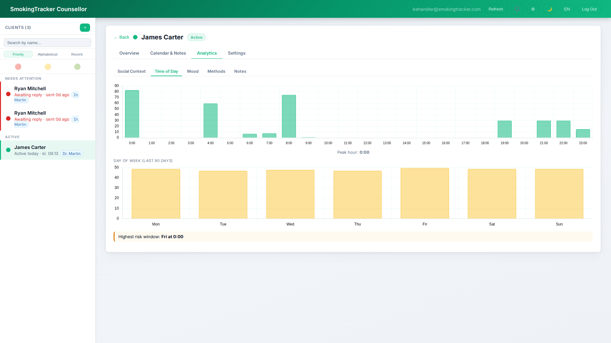
If usage peaks at 1:00 PM, this is a midday "rut" — a habitual break pattern rather than stress-driven use. Work with the client to schedule a specific, non-drug activity (a walk, a phone call, a chore) at 12:45 PM to interrupt the pattern before the urge fully forms.
Ask: "What would have to be true about your Tuesday afternoons for you not to need that session?"
Shows how mood is distributed across all logged sessions. Clients rate their mood on a 1–10 scale at the time of logging (1 = very low, 10 = very positive). Because mood is optional, coverage varies — but even partial data is clinically significant.
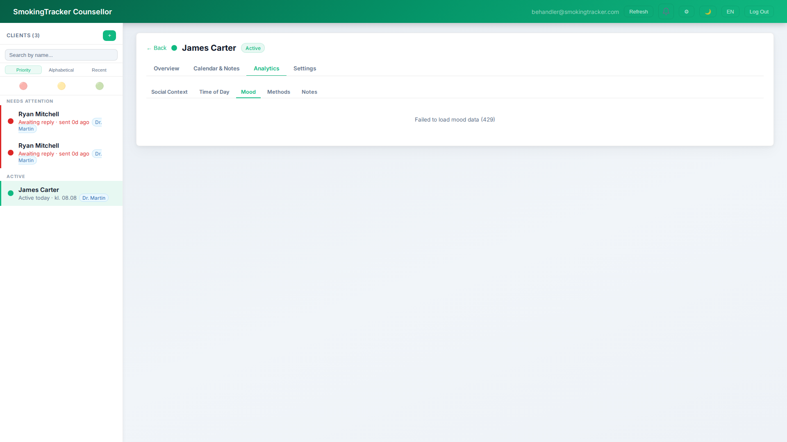
Sessions logged at low mood suggest use as emotional relief. Explore whether it's providing genuine short-term help — and what the long-term cost is. Introduce alternatives: TIPP skills, physical exercise, behavioural activation.
Not driven by distress — more likely boredom or habit. Behavioural activation (structured evenings, new activities) is often more effective than emotion-focused approaches here.
Use during good moments can be easy to overlook — it doesn't feel like a problem. But it often signals reward-pairing: the behaviour becomes part of how the client marks enjoyment or socialising. Worth naming without pathologising.
Breaks down sessions by consumption method: joints, blunts, hand pipe / bong / bubbler, dry herb vape, vape pen, edibles, concentrates, etc. This is particularly relevant for harm reduction conversations.
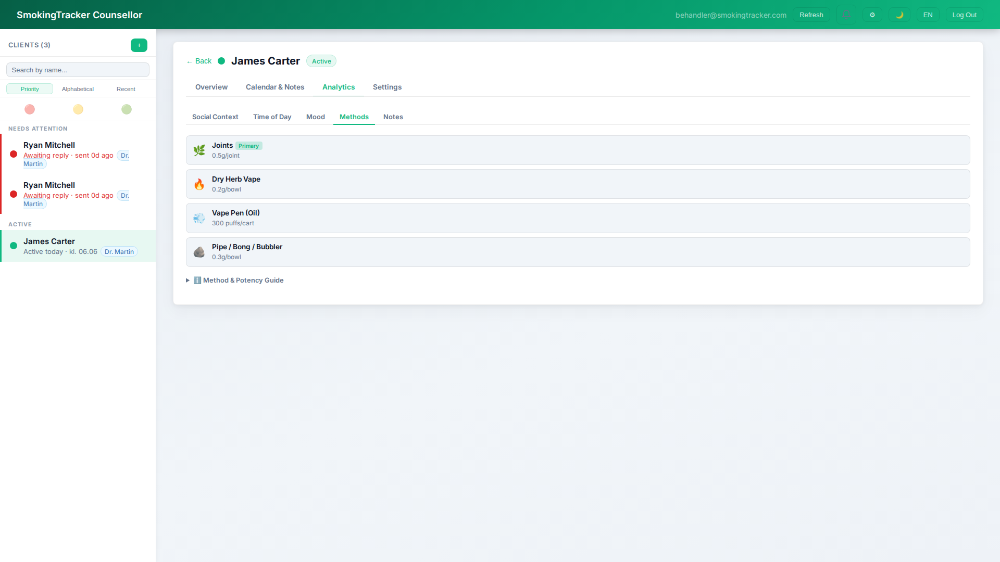
A move from edibles → smoking, or from joints → vaping, may indicate increasing urgency — the client is chasing a faster onset. Worth exploring without alarmism.
Blunts hold 3–4× more cannabis per session than a standard joint (~1.5g vs ~0.5g). A shift toward blunts or bongs can signal a tolerance increase or a move toward heavier social use — even if the session count stays the same. The grams tracked will reflect this automatically.
A move toward vaporizing or edibles is clinically meaningful, even if the amount is unchanged. Name it as a win: "You've changed how you use it — that took something."
Clients using several methods simultaneously often have less conscious control over their use — each method has its own trigger and context, making patterns harder to interrupt. A concrete, achievable goal: pick one method and stick to it for two weeks. Reducing variety is itself a form of reduction, and it makes the data — and the behaviour — much easier to work with together.
When clients log a session, they can leave a short free-text note. These are captured verbatim in the Notes tab and are often the most clinically raw data available to you.
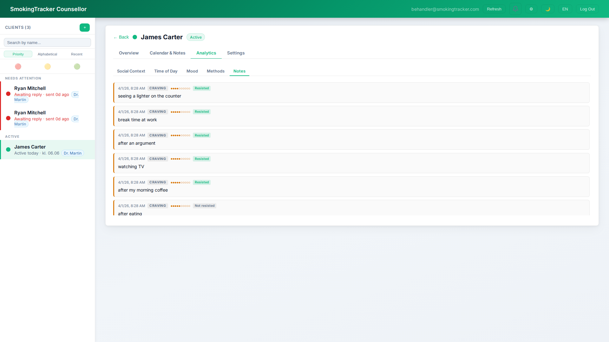
Some notes may contain content that warrants immediate clinical attention. Reading them before a session — rather than live in the room — gives you space to consider how to respond.
These are the client's own words — distinct from the notes you write in the Calendar & Notes tab, which the client cannot see.
Motivation & tools
The client app has an Awards tab that unlocks achievements for consistency, streaks, and goal-related milestones. These aren't just badges — they create concrete evidence of change that you can anchor a conversation to.
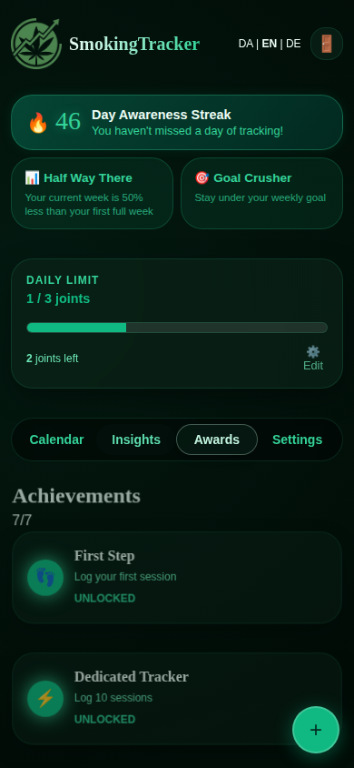
Client view · Awards tab
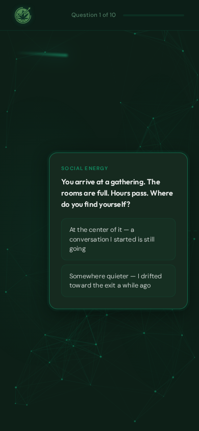
Distraction exercise
The app includes a guided distraction exercise — a short, scenario-based activity available when a craving hits.
During the pilot
This is a pilot — things will not be perfect. Your observations and your clients' reactions are the most valuable data we have. Please do share them.
If something breaks — for you or your client — drop us an email:
What's missing? What's confusing? What would make this more useful in your sessions?
If a client gives you unsolicited feedback about the app — positive or negative — please note it and share it with us. The most useful insights are the ones you didn't go looking for.